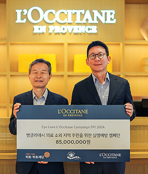
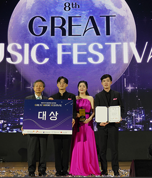
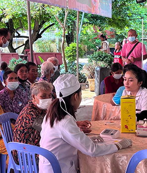

From heart to story
하트 스토리
하트-하트재단과 만들어 나가는,
더불어 함께하는 세상의 수많은 이야기들
-

SK하이닉스와 함께하는 2024 SK하이닉스
하트-하트재단과 SK하이닉스가 함께하전국 아동·청소년 지원을 통해
more -

8년째 이어지는 록시땅과 하트 -하트재단의 실명예방 스토리
월 22일, ‘아이 러브 록시땅(EYE LOVE L’OCCITANE) 2024’
more -

서로의 꿈이 어우러진 무대, 제8회 GMF 성공적 개최 현장!
017년에 시작된 GMF는 하트-하트재단이 주최하고,
more -

캄보디아, 비감염성 질환(NCD)- 안과 통합검진 활동 시작!
하트-하트재단 캄보디아 지부는 캄보디아 바탐방 지역에서 비감염성
more